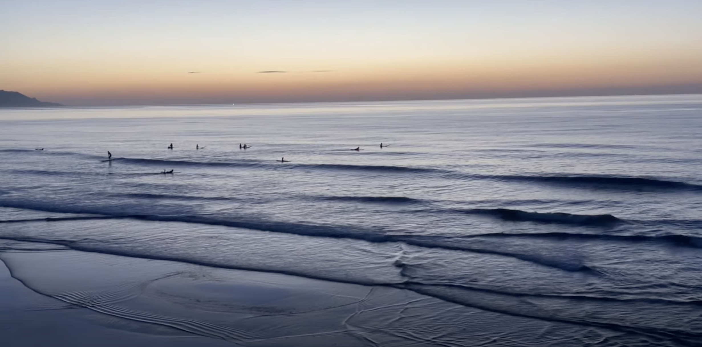
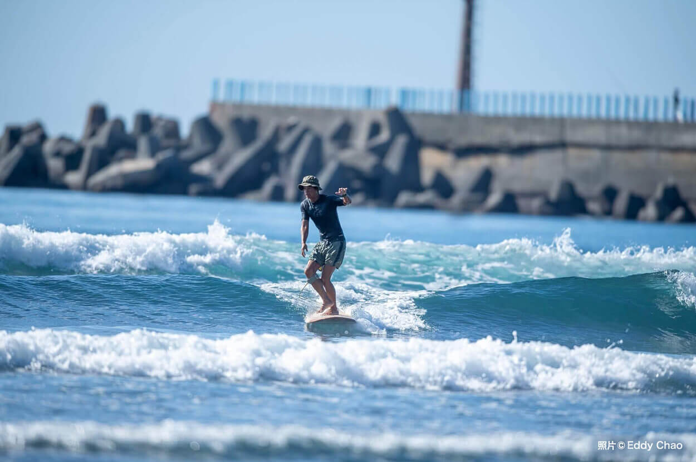

浪點介紹 閱讀 6 分
北部・烏石港
烏石港完整攻略：從防波堤內側練起
沙灘與礁岩混合地形，適合初學者練習，但防波堤北側礁岩區要特別留意退流時機。

浪點介紹 閱讀 6 分沙灘與礁岩混合地形，適合初學者練習，但防波堤北側礁岩區要特別留意退流時機。
混濁的水色、沒有白沫的水面、垂直於岸的小波紋——學會看這三個徵兆，比什麼都重要。
礁岩型浪點，浪況佳但地形變化快，建議有經驗者優先，並抓緊滿潮前兩小時的空檔。
冬天東北季風浪點水溫直落 18 度，厚度怎麼挑、袖長要不要留，實際下水比較給你看。
防波堤北側礁岩區，注意退流
注意防波堤旁離岸流
注意岸邊砂洲與潮汐變化
人潮多，夏季水母頻繁
烏石港是北部最容易入門的浪點之一，主要是沙灘地形，適合新手練習划水與站板的好地方。但別被「好上手」騙了——退潮時防波堤北側的消坡塊區暗流不小，這篇會把安全範圍講清楚。
屬於沙灘浪與地形浪的混合型態，西南到南風時最乾淨。退潮前後兩小時是黃金窗口，浪型會比滿潮時更有型、更好抓。

「防波堤北側消波區，注意退潮」——這句話我一開始也覺得是罐頭警語，直到有次退潮貪玩多划了兩趟，才知道那股流有多扎實。
人潮集中在防波堤內側，外側浪型較大也較亂，新手不建議貿然移動過去。退潮後段消坡塊會裸露，務必留意腳踩位置。
烏石港衝浪教室聚集地，租板／換裝設施齊全，開車到國5頭城交流道下來 或搭火車到頭城站再轉乘計程車，都方便抵達。